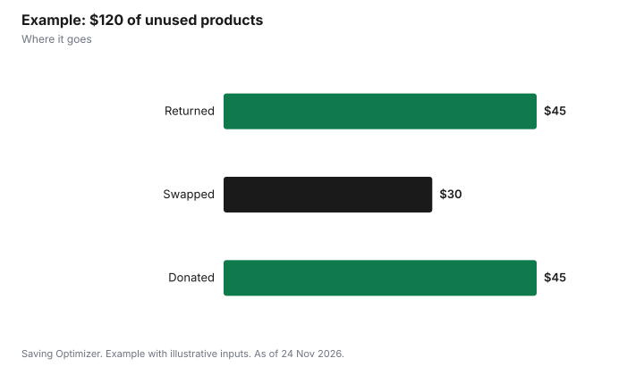

Personal Care · Canada
What to Do With Unused Beauty Products: Donations, Swaps and Returns

The best time to deal with a beauty product you don't like is in the first 30 days, while you can still return it. Sephora Canada takes new or gently used products back within 30 days, and Shoppers Drug Mart allows 30 days with a receipt. After that, swap opened products with friends and donate new, unopened ones to a shelter. Then stop buying duplicates.
Key takeaways
- Sephora Canada: new or gently used products within 30 days (checked 24 Nov 2026).
- Shoppers Drug Mart: 30 days with a receipt; check the condition rules.
- Shelters often accept new, unopened toiletries; call first.
- Swap opened products with friends or family.
- Check period-after-opening dates before using old products.
Your options
| Option | Best for | Notes |
|---|---|---|
| Return to Sephora | New or gently used, within 30 days | Refund to original payment |
| Return to Shoppers Drug Mart | Within 30 days with receipt | Condition rules apply |
| Donate to a shelter | New, unopened toiletries | Eagle's Nest and Second Story list toiletries; call first |
| Swap with friends | Opened, clean products | Wipe or decant where you can |
| Throw out | Past PAO date or changed | Don't donate expired items |
Stop the pile from growing
- Ask for samples before buying full sizes.
- Shop your drawer before a sale.
- Skip gift sets of shades you won't wear.
- Keep receipts for 30 days.

Plan: an example
Example: you have $120 of unused products. You return $45 still within the window, swap $30 of opened items with friends, and donate the sealed rest. Next time, ask for a sample first.
See product expiry dates, free samples and beauty loyalty programs.
Sources
- Sephora Canada, Returns and exchanges policy, checked 24 Nov 2026.
- Shoppers Drug Mart, Return policy, checked 24 Nov 2026.
- Eagle's Nest Shelter, Donations, checked 24 Nov 2026.
- Second Story Women's Centre, Donations, checked 24 Nov 2026.
Frequently asked questions
Can I return opened makeup in Canada?
Sephora Canada accepts new or gently used products within 30 days. Other stores have their own rules.
What is the Shoppers Drug Mart return policy?
30 days with a receipt, with condition rules. Check in store.
Where can I donate unused toiletries?
Many shelters accept new, unopened toiletries. Call first to ask what they need.
Can I donate opened makeup?
Usually not. Swap it with friends or family instead.
How do I know if makeup is expired?
Check the period-after-opening symbol and throw out anything that smells or looks different.
Researched and drafted with AI assistance and fact-checked against official Canadian sources. How we create content.
Note: Store policies change; check before you return. Amounts are examples. Education only.